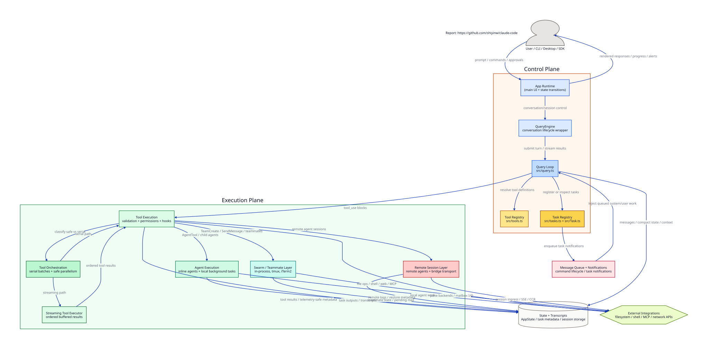
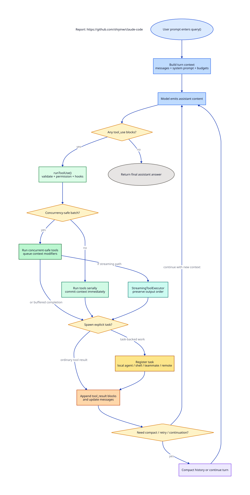
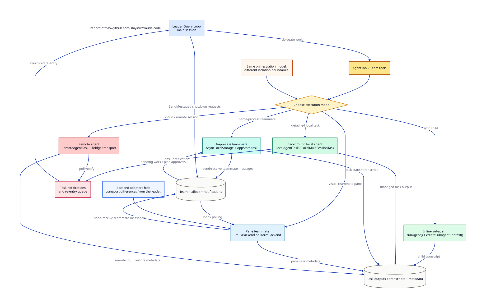

How Claude Code Designs Agent Orchestration
One shared runtime, explicit delegation tools, isolated child contexts, and a task model for long-running work.
On March 31, 2026, Claude Code’s source became recoverable after a released package exposed a source map that pointed back to the TypeScript codebase. That made it possible to reconstruct a large part of the internal implementation from published artifacts.
I first came across that news through this X post. That is what led me to read through the exposed Claude Code source and write this post.
I want to write about this code with some respect. I have a lot of admiration for Anthropic, and I think Claude Code reflects serious work on agent orchestration, tool safety, and long-running execution. Reading the code made me appreciate how much engineering sits behind a capable agent system. I’m grateful they have been willing to push on this frontier, even if this particular look into the codebase came from an accidental leak.
This post stays at the level of runtime design, orchestration flow, and original diagrams. It is meant as a technical reading of the system, not a reproduction of detailed internal materials.
One runtime, many agents
Claude Code is organized around a control plane for many LLM calls. The core turn loop lives in src/query.ts, and child agents extend that same runtime. That keeps streaming, tools, permissions, compaction, and retry behavior aligned across parent and child execution.
The top-level architecture is straightforward. A main orchestrator loop decides when delegation is useful. A spawn mechanism creates a child agent with scoped permissions, tools, and context. A task layer tracks lifecycle, progress, cancellation, and notifications. A re-entry path feeds completed child results back into the parent conversation. The codebase keeps that structure visible through explicit runtime, task, and tool boundaries.

The high-level picture is a control plane anchored by the query loop and registries, an execution plane for tools and agents, persistent state, and external integration surfaces.
That shape keeps the codebase from collapsing into one “agent does everything” loop. The tool registry in src/tools.ts, the task registry in src/tasks.ts, and the task model in src/Task.ts give the system explicit control-plane objects. That makes orchestration easier to debug, resume, and extend.
It is worth being precise about the phrase “shared runtime.” Claude Code has both the generator loop in src/query.ts and a stateful wrapper in src/QueryEngine.ts. The former is the turn kernel. The latter owns conversation-level lifecycle and persistence for the SDK and headless path. Together, they make the control plane feel like a runtime with clear ownership of turns, sessions, and persistence.
The key architectural choice is runtime reuse. Parent and child agents rely on the same core loop: the main flow still lives in src/query.ts, while child agents are launched through src/tools/AgentTool/runAgent.ts and then re-enter that same machinery with scoped configuration. Streaming, tool calling, retries, context compaction, and transcript format stay consistent across parent and child execution.
That pattern scales well in practice. A solid single-agent runtime becomes the foundation, and delegation becomes runtime instantiation with different configuration. Shared semantics across parent and worker paths make maintenance, debugging, and operational behavior much more predictable.
Claude keeps orchestration and execution separate. The decision layer chooses whether to spawn an agent, what kind of agent to spawn, whether it should run in the foreground or background, and whether it should be isolated in a worktree. The actual work still belongs to the child runtime. That separation prevents routing logic, lifecycle control, and task execution from collapsing into one tangled block of code.
Transcript-first observability also shows up here. Claude repeatedly pushes agent work into transcripts, sidecar metadata, and task output files. That makes the system easier to inspect while it is running and easier to recover or audit later.
Persona is part of this design too. Claude Code is not running one generic prompt and hoping it can switch roles on demand. The codebase separates runtime from role. The main session prompt in src/constants/prompts.ts defines the broad interactive persona for Claude Code itself: an agent that helps with software engineering work, uses tools carefully, keeps communication concise, and carries session context such as memory, environment information, and output style. That is the personality of the control plane.
Once work is delegated, the role narrows. The default worker in generalPurposeAgent.ts is told to complete the task fully, search broadly, analyze across files, and report back succinctly. Around that, Claude defines a small set of built-in specialists with much tighter identities: Explore for read-only search, Plan for architecture and implementation planning, verification for adversarial checking, and claude-code-guide for product and documentation questions.
The parent agent has a separate job again. In src/tools/AgentTool/prompt.ts, it is taught when to launch a worker, when to fork, how to brief the worker, and how to use the result once it comes back. That is why the line “Never delegate understanding” matters: the parent can delegate execution or research, but it still owns judgment. Put differently, Claude keeps one shared runtime, but it does not flatten every agent into the same voice. It gives each role a prompt, a job, and a tool boundary that match the part it plays in the orchestration.
In src/constants/prompts.ts, the main agent is framed as “an interactive agent” that helps users with software engineering tasks, uses tools carefully, and communicates clearly.
In generalPurposeAgent.ts, the worker prompt says: “You are an agent for Claude Code...” and instructs the agent to “Complete the task fully,” search broadly, and return only the essentials.
The built-in specialists are deliberately narrow. Explore is “a file search specialist,” Plan is “a software architect and planning specialist,” and verification says its job is “to try to break it,” not simply confirm that things look fine.
In src/tools/AgentTool/prompt.ts, the parent is taught when to launch new agents, when to fork, how to write a good brief, and one of the clearest lines in the file: “Never delegate understanding.”
This is a useful pattern if you are building your own system. One runtime gives you one execution model. Persona separation gives each agent a clear job. Tool scoping turns that role into an enforceable boundary. The result is easier to reason about than a single all-purpose prompt trying to act as orchestrator, researcher, planner, and verifier at the same time.
Child-context isolation sits in the same layer. In src/utils/forkedAgent.ts, different pieces of state are handled according to their role: file-read caches are cloned, content-replacement state is cloned by default, getAppState is wrapped, and setAppState stays local unless the caller explicitly shares it. Abort control follows the same pattern, with derived child controllers on some paths and shared parent control on a few synchronous paths.
Selective isolation is the design point that matters. In real multi-agent systems, the hard problem is deciding which state can safely be shared and which state must remain isolated. That boundary shapes permission safety, retry behavior, prompt integrity, and parent-facing UI state.
| Parent field / capability | Child behavior | Category | Why it matters |
|---|---|---|---|
| messages | Caller decides what to pass as initial child messages | caller-controlled | Forked agents may inherit parent context; normal subagents usually get a narrower prompt |
| readFileState | cloned | cloned | Child reads do not mutate the parent cache directly |
| contentReplacementState | cloned by default, overrideable | cloned | Preserves prompt-cache-stable replacement behavior |
| abortController | new child controller by default | derived | Parent abort propagates downward without giving the child normal authority to abort the parent |
| getAppState | wrapped by default | wrapped/shared read | Child can still see root runtime state, often with prompt-avoidance adjustments |
| setAppState | no-op unless explicitly shared | opt-in shared mutation | Isolation by default prevents child writes into parent UI or session state |
| setAppStateForTasks | always preserved from root store | always shared control path | Async task registration and kill must still work even when setAppState is isolated |
| setResponseLength | no-op unless explicitly shared | opt-in callback share | Keeps child metrics from polluting parent unless desired |
| tool options | overridden by caller or filtered for child | overridden | Child gets scoped tools, query source, and agent identity |
| permission context | usually narrowed or adjusted | overridden/wrapped | Background agents often run under prompt-suppressed permission policies |
| discoveredSkillNames and similar sets | fresh per child | fresh isolated state | Prevents cross-agent telemetry and state pollution |
| toolDecisions | reset | fresh isolated state | Keeps per-agent tool decisions independent |
How a turn becomes routed agent work
Delegation is implemented as a routing decision with different execution modes, isolation levels, and lifecycle consequences.
That is why the orchestration story is spread across src/tools/AgentTool/, src/tasks/, and src/utils/swarm/. The parent must choose whether a job should run inline as a child query, as a background task, as a teammate with a different backend, or as a remote session. The implementation lives in orchestration, lifecycle, and backend management code rather than only in prompting.

Inside a turn, model output becomes tool calls, tool scheduling distinguishes safe parallel work from serialized work, and some tool results become task-backed execution paths with their own lifecycle.
The design keeps the orchestrator separate from the worker executor and models tool scheduling explicitly. The logic in src/services/tools/toolOrchestration.ts and src/services/tools/StreamingToolExecutor.ts treats concurrency as a correctness problem with latency tradeoffs. That gives the whole system a more operational feel.
The trigger path inside a turn is the main design surface. The model emits tool calls, the system decides which tools are safe to run concurrently and which must be serialized, and some of those tool results expand into task-backed execution paths. Multi-agent work appears here as part of a unified scheduling model.
The same logic extends naturally into the lifecycle topology shown below. Inline child agents, background local agents, in-process teammates, tmux or iTerm2 pane teammates, and remote sessions may look like separate features, yet they share one orchestration shape across different isolation boundaries. That abstraction supports background work, multi-worker coordination, and remote sessions without requiring a new framework for each execution mode.
The remote path follows the same pattern. In src/bridge/remoteBridgeCore.ts remote execution includes session creation, bridge credential refresh, transport rebuilds, and ingress-message handling. The result is a session transport layer with its own runtime concerns.

The lifecycle design starts with an isolation choice and then routes work into inline subagents, background workers, swarm backends, or remote sessions with different state and transcript boundaries.
If you abstract this into a general systems lesson, it is simple: a good multi-agent platform should support logical isolation, workspace isolation, and compute isolation at the same time. Claude’s code is clearly organized in that direction. The same coordination model also carries across those worker substrates, with a shared vocabulary of tasks, transcripts, notifications, and mailboxes. That consistency is a useful part of the platform design.
Tasks, re-entry, permissions, and concurrency
The task model gives the architecture its operational shape. Background agents in Claude are explicitly registered as tasks. In src/tasks/LocalAgentTask/LocalAgentTask.tsx and src/Task.ts, tasks carry ids, state, output files, transcript paths, progress, retention behavior, and notification flags. That is what makes background execution resumable, killable, and observable.
The sequence view fits this part of the system because the main concern is handoff across task registration, detached execution, progress updates, and completion notification.
sequenceDiagram
autonumber
actor Parent as Parent Query / AgentTool
participant TaskReg as registerAsyncAgent
participant TaskState as LocalAgentTask State
participant Runner as runAsyncAgentLifecycle
participant Agent as runAgent / child query()
participant Queue as Command Queue
participant Main as Main query()
Parent->>TaskReg: registerAsyncAgent(agentId, description, prompt)
TaskReg->>TaskState: create local_agent task\nstatus = running
TaskReg-->>Parent: task handle\n(agentId, abortController, outputFile)
Parent->>Runner: start detached lifecycle
Runner->>Agent: runAgent(...)
loop while child agent runs
Agent->>TaskState: update progress
Agent->>TaskState: append transcript / output
end
alt completed
Runner->>TaskState: completeAgentTask(...)
Runner->>Queue: enqueue task-notification\nstatus=completed
else failed
Runner->>TaskState: failAgentTask(...)
Runner->>Queue: enqueue task-notification\nstatus=failed
else killed
Runner->>TaskState: killAsyncAgent(...)
Runner->>Queue: enqueue task-notification\nstatus=killed
end
Queue->>Main: deliver task-notification command
One implementation detail matters here: the task is marked complete before extra post-processing like summarization or worktree cleanup. That keeps task state aligned with the actual end of the work.
Claude routes completion back through structured notifications. When a child finishes, the task manager emits an XML-like task notification, the main loop treats it as new input, and the parent decides how that result should be integrated back into the conversation. That keeps background execution and foreground decision-making on clean boundaries.
The re-entry path in the second sequence runs through explicit structures such as task state, pending messages, and the command queue. Restoration, logging, and failure recovery all become easier when those events live in the system model.
sequenceDiagram
autonumber
participant Agent as Background Agent
participant TaskState as LocalAgentTask State
participant TaskMgr as Async Agent Lifecycle
participant Queue as Command Queue
participant Main as Main query()
actor User as User
loop while background agent is active
Agent->>TaskState: write transcript / output / progress
Main->>TaskState: inspect output file or task metadata
Main->>TaskState: queuePendingMessage(...)
Agent->>TaskState: drainPendingMessages(...)
end
alt agent completes
TaskMgr->>Queue: enqueue task-notification\n(completed)
else agent fails
TaskMgr->>Queue: enqueue task-notification\n(failed)
else agent is killed
TaskMgr->>Queue: enqueue task-notification\n(killed)
end
Queue->>Main: deliver task-notification command
Main->>Main: convert command to attachment / input
Main-->>User: summarize result / decide next step
Permissions shape a large part of the multi-agent design. A child agent receives a filtered tool surface, a permission mode, a policy around whether it can prompt the user, a possible plan-mode constraint, a decision about worktree isolation, and a decision about whether it may continue in the background. A lot of that logic sits in src/tools/AgentTool/runAgent.ts and the surrounding tool-execution stack. Claude is careful here: agents can define their own permission modes, some parent modes still take precedence, and async agents can run under policies that suppress direct permission dialogs.
The same discipline appears in concurrency. At the tool layer, src/services/tools/toolOrchestration.ts explicitly separates concurrency-safe calls from operations that should remain serialized, while the streaming path in src/services/tools/StreamingToolExecutor.ts preserves output order even when execution overlaps. The same logic should apply to agents: research work can fan out, while multiple workers touching the same files usually need tighter coordination. Concurrency is handled here as a correctness problem with explicit execution rules.
The code also supports multiple isolation modes under one coordination model. A shared-context subagent, a forked worker, a worktree-isolated child, an in-process teammate, a tmux or iTerm2 pane teammate, and a remote session all keep the same basic structure: workers have identities and transcripts, tasks have ids, and results return through structured coordination paths. Files like src/utils/swarm/backends/registry.ts show how that coordination model extends across backends.
Delegation cost also shows up in the implementation. Claude’s forked-worker path is designed with prompt-cache reuse in mind. That keeps delegation cheap enough to use during normal work.
What this design gets right
The design highlights are fairly clear by the end of the code walk. Claude Code keeps one shared runtime for parent and child agents, treats delegation as an explicit control-flow decision, forks child state with a narrow and deliberate sharing boundary, and routes long-running work through a task model with structured notifications. Those choices give the system a readable control plane and make the agent behavior easier to reason about.
The other thing that stands out is discipline around operations. Permissions are scoped, concurrency is modeled explicitly, and different execution modes still fit into the same coordination model. That consistency is what makes the codebase interesting to study from a systems perspective.